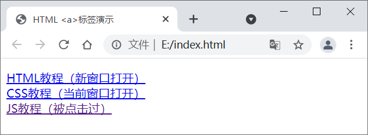

HTML超链接标签<a>
在 HTML 中，我们使用 <a> 标签来表示超链接。
超链接（Hyperlink）通常简称为链接（Link），是指从一个网页指向另一个目标的连接关系，这个目标可以是另一个网页，也可以是当前网页中的其它位置，还可以是图片、文件、应用程序等。链接的两端分别称为源锚点和目标锚点，通过点击源锚点即可以跳转到目标锚点。
例如，链接到C语言中文网首页，并在浏览器新窗口中打开：
你看，href 本质上就是指向一个文件，这个文件几乎可以是任意格式的。如果浏览器支持这种格式，那么它就可以在浏览器上显示，比如常见的图片、音频、视频等，如果浏览器不支持这种格式，那么就提示用户下载。
另外，href 使用的路径可以是绝对路径，也可以是相对路径。绝对路径往往以域名为起点，例如 http://c.biancheng.net/view/1719.html；相对路径往往以当前文件或者当前域名为起点，例如 ./../uploads/data_package/ComputerFoundation.zip。对 URL 结构不了解的读者，请转到《绝对路径与相对路径》进行学习。
绝大部分情况下，target 属性要么不写，保持默认的 _self，要么将它的值设置为 _blank，在新窗口中打开页面。例如：
浏览器根据历史记录来判断超链接是否被点击过，如果 href 属性和历史记录中的某条 URL 重合，那么说明该链接被点击了。清空浏览器的历史记录会让超链接的颜色再次变回蓝色。
【示例】HTML 超链接的多种形式：
超链接（Hyperlink）通常简称为链接（Link），是指从一个网页指向另一个目标的连接关系，这个目标可以是另一个网页，也可以是当前网页中的其它位置，还可以是图片、文件、应用程序等。链接的两端分别称为源锚点和目标锚点，通过点击源锚点即可以跳转到目标锚点。
超链接是网页中最常见的元素之一，整个互联网都是基于超链接而构建的。网站由众多网页构成，超链接使得网页之间不再独立，它就像一根线，把网页连接在一起，形成一个网状结构。互联网之所以能够称之为“网”，就是因为有超链接的存在。
<a> 标签的语法格式如下：<a href="url" target="opentype">链接文本</a>
其中，href 属性用来指明要跳转到的 url，target 属性用来指明新页面的打开方式，链接文本需要写在 <a> 和 </a> 之间。例如，链接到C语言中文网首页，并在浏览器新窗口中打开：
<a href="http://c.biancheng.net" target="_blank">C语言中文网</a>链接到 HTML 教程的第一篇文章，并在当前窗口中打开：
<a href="http://c.biancheng.net/view/7410.html" target="_blank">网站到底是什么</a>
href 属性
href 属性指定链接的目标，也就是要跳转到什么位置。href 可以有多种形式，例如：- href 可以指向一个网页（.html、.php、.jsp、.asp 等格式），这也是最常见的形式，例如 href="http://c.biancheng.net/view/1719.html"；
- href 可以指向图片（.jpg、.gif、.png 等格式）、音频（.mp3、.wav等格式）、视频（.mp4、.mkv格式）等媒体文件，例如 href="/uploads/allimg/181221/134I32557-0.jpg"；
- href 可以指向压缩文件（.zip、.rar 等格式）、可执行程序（.exe）等，一些下载网站的链接就可以写成这种形式，例如 href="./../uploads/data_package/ComputerFoundation.zip"；
- href 甚至还可以指向本机的文件，只是很少这样使用，例如 href="D:/Program Files/360/360safe/360Safe.exe"。
你看，href 本质上就是指向一个文件，这个文件几乎可以是任意格式的。如果浏览器支持这种格式，那么它就可以在浏览器上显示，比如常见的图片、音频、视频等，如果浏览器不支持这种格式，那么就提示用户下载。
另外，href 使用的路径可以是绝对路径，也可以是相对路径。绝对路径往往以域名为起点，例如 http://c.biancheng.net/view/1719.html；相对路径往往以当前文件或者当前域名为起点，例如 ./../uploads/data_package/ComputerFoundation.zip。对 URL 结构不了解的读者，请转到《绝对路径与相对路径》进行学习。
target 属性
target 是可选属性，用来指明新页面的打开方式。默认情况下，新页面在当前浏览器窗口中打开，我们可以使用 target 属性来改变新页面的打开方式。常见的打开方式如下表所示：| 属性值 | 说明 |
|---|---|
| _self | 默认，在现有窗口中打开新页面，原窗口将被覆盖。 |
| _blank | 在新窗口中打开新页面，原窗口将被保留。 |
| _parent | 在当前框架的上一层打开新页面。 |
| _top | 在顶层框架中打开新页面。 |
绝大部分情况下，target 属性要么不写，保持默认的 _self，要么将它的值设置为 _blank，在新窗口中打开页面。例如：
<a href="http://c.biancheng.net/html/" target="_blank">HTML教程（新窗口打开）</a> <a href="http://c.biancheng.net/css3/">CSS教程（当前窗口打开）</a>
<a> 标签的默认样式
浏览器会为 <a> 标签设置一些默认样式。1) 鼠标样式
当鼠标移入链接区域时，会变成一只小手；当鼠标移出链接区域时，会变回箭头形状。2) 颜色及下划线
超链接被点击之前为蓝色，超链接被点击之后变成紫色。超链接默认带有下划线，下划线颜色和文本颜色保持一致。浏览器根据历史记录来判断超链接是否被点击过，如果 href 属性和历史记录中的某条 URL 重合，那么说明该链接被点击了。清空浏览器的历史记录会让超链接的颜色再次变回蓝色。
【示例】HTML 超链接的多种形式：
<!DOCTYPE html>
<html lang="en">
<head>
<meta charset="UTF-8">
<title>HTML <a>标签演示</title>
</head>
<body>
<p>
<a href="http://c.biancheng.net/html/" target="_blank">HTML教程（新窗口打开）</a><br>
<a href="http://c.biancheng.net/css3/">CSS教程（当前窗口打开）</a><br>
<a href="http://c.biancheng.net/js/">JS教程（被点击过）</a>
</p>
</body>
</html>
运行效果：

图1：HTML 超链接演示
图1：HTML 超链接演示
关注公众号「站长严长生」，在手机上阅读所有教程，随时随地都能学习。内含一款搜索神器，免费下载全网书籍和视频。

微信扫码关注公众号